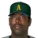
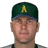
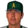
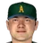
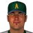
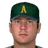
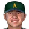
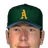

Franchise record book · FBL
Alaska Athletics
Seasons covered: 2002–2002. Only games played for this franchise count.
This club has no pre-2002 history in the export, so its record book is the 2002 season to date. Rate records need 3.1 PA or 1 inning per team game.
Home runs
| # | Player | Season | Team | Home runs |
|---|---|---|---|---|
| #1 |  Rontrez Johnson • | 2002 (FBL) |  Alaska Athletics Alaska Athletics | 6 |
| #2 |  Casey Blake • | 2002 (FBL) | Alaska Athletics | 5 |
| #3 | 2002 (FBL) | Alaska Athletics | 4 | |
| #4 | 2002 (FBL) | Alaska Athletics | 4 | |
| #5 | 2002 (FBL) | Alaska Athletics | 3 | |
| #6 | 2002 (FBL) | Alaska Athletics | 2 | |
| #7 | 2002 (FBL) | Alaska Athletics | 1 | |
| #8 | 2002 (FBL) | Alaska Athletics | 1 | |
| #9 |  Mike Benjamin • | 2002 (FBL) | Alaska Athletics | 1 |
| #10 | Robby Hammock • | 2002 (FBL) | Alaska Athletics | 1 |
Hits
| # | Player | Season | Team | Hits |
|---|---|---|---|---|
| #1 | 2002 (FBL) | Alaska Athletics | 46 | |
| #2 | Rontrez Johnson • | 2002 (FBL) | Alaska Athletics | 44 |
| #3 | Casey Blake • | 2002 (FBL) | Alaska Athletics | 43 |
| #4 | 2002 (FBL) | Alaska Athletics | 42 | |
| #5 | 2002 (FBL) | Alaska Athletics | 32 | |
| #6 | 2002 (FBL) | Alaska Athletics | 31 | |
| #7 | Mike Benjamin • | 2002 (FBL) | Alaska Athletics | 29 |
| #8 | 2002 (FBL) | Alaska Athletics | 27 | |
| #9 | 2002 (FBL) | Alaska Athletics | 27 | |
| #10 |  Warren Morris • | 2002 (FBL) | Alaska Athletics | 13 |
RBI
| # | Player | Season | Team | RBI |
|---|---|---|---|---|
| #1 | Rontrez Johnson • | 2002 (FBL) | Alaska Athletics | 22 |
| #2 | 2002 (FBL) | Alaska Athletics | 21 | |
| #3 | 2002 (FBL) | Alaska Athletics | 16 | |
| #4 | 2002 (FBL) | Alaska Athletics | 16 | |
| #5 | Mike Benjamin • | 2002 (FBL) | Alaska Athletics | 16 |
| #6 | 2002 (FBL) | Alaska Athletics | 14 | |
| #7 | 2002 (FBL) | Alaska Athletics | 11 | |
| #8 | Casey Blake • | 2002 (FBL) | Alaska Athletics | 10 |
| #9 | 2002 (FBL) | Alaska Athletics | 9 | |
| #10 | Robby Hammock • | 2002 (FBL) | Alaska Athletics | 8 |
Runs
| # | Player | Season | Team | Runs |
|---|---|---|---|---|
| #1 | Rontrez Johnson • | 2002 (FBL) | Alaska Athletics | 27 |
| #2 | Casey Blake • | 2002 (FBL) | Alaska Athletics | 21 |
| #3 | 2002 (FBL) | Alaska Athletics | 16 | |
| #4 | 2002 (FBL) | Alaska Athletics | 14 | |
| #5 | 2002 (FBL) | Alaska Athletics | 14 | |
| #6 | 2002 (FBL) | Alaska Athletics | 14 | |
| #7 | 2002 (FBL) | Alaska Athletics | 13 | |
| #8 | 2002 (FBL) | Alaska Athletics | 11 | |
| #9 | Mike Benjamin • | 2002 (FBL) | Alaska Athletics | 7 |
| #10 | Robby Hammock • | 2002 (FBL) | Alaska Athletics | 7 |
Stolen bases
| # | Player | Season | Team | Stolen bases |
|---|---|---|---|---|
| #1 | Rontrez Johnson • | 2002 (FBL) | Alaska Athletics | 11 |
| #2 | Casey Blake • | 2002 (FBL) | Alaska Athletics | 6 |
| #3 | 2002 (FBL) | Alaska Athletics | 5 | |
| #4 | 2002 (FBL) | Alaska Athletics | 5 | |
| #5 | 2002 (FBL) | Alaska Athletics | 3 | |
| #6 | 2002 (FBL) | Alaska Athletics | 2 | |
| #7 | Robby Hammock • | 2002 (FBL) | Alaska Athletics | 1 |
| #8 | 2002 (FBL) | Alaska Athletics | 0 | |
| #9 | 2002 (FBL) | Alaska Athletics | 0 | |
| #10 | 2002 (FBL) | Alaska Athletics | 0 |
Doubles
| # | Player | Season | Team | Doubles |
|---|---|---|---|---|
| #1 | 2002 (FBL) | Alaska Athletics | 10 | |
| #2 | 2002 (FBL) | Alaska Athletics | 9 | |
| #3 | 2002 (FBL) | Alaska Athletics | 9 | |
| #4 | 2002 (FBL) | Alaska Athletics | 5 | |
| #5 | Casey Blake • | 2002 (FBL) | Alaska Athletics | 5 |
| #6 | 2002 (FBL) | Alaska Athletics | 5 | |
| #7 | Warren Morris • | 2002 (FBL) | Alaska Athletics | 5 |
| #8 | 2002 (FBL) | Alaska Athletics | 3 | |
| #9 | Mike Benjamin • | 2002 (FBL) | Alaska Athletics | 3 |
| #10 | Rontrez Johnson • | 2002 (FBL) | Alaska Athletics | 2 |
Triples
| # | Player | Season | Team | Triples |
|---|---|---|---|---|
| #1 | Casey Blake • | 2002 (FBL) | Alaska Athletics | 2 |
| #2 | Rontrez Johnson • | 2002 (FBL) | Alaska Athletics | 2 |
| #3 | 2002 (FBL) | Alaska Athletics | 1 | |
| #4 | 2002 (FBL) | Alaska Athletics | 1 | |
| #5 | 2002 (FBL) | Alaska Athletics | 1 | |
| #6 | 2002 (FBL) | Alaska Athletics | 1 | |
| #7 | 2002 (FBL) | Alaska Athletics | 0 | |
| #8 | 2002 (FBL) | Alaska Athletics | 0 | |
| #9 | Warren Morris • | 2002 (FBL) | Alaska Athletics | 0 |
| #10 | Mike Benjamin • | 2002 (FBL) | Alaska Athletics | 0 |
Walks
| # | Player | Season | Team | Walks |
|---|---|---|---|---|
| #1 | 2002 (FBL) | Alaska Athletics | 19 | |
| #2 | 2002 (FBL) | Alaska Athletics | 18 | |
| #3 | 2002 (FBL) | Alaska Athletics | 16 | |
| #4 | Casey Blake • | 2002 (FBL) | Alaska Athletics | 16 |
| #5 | 2002 (FBL) | Alaska Athletics | 11 | |
| #6 | Rontrez Johnson • | 2002 (FBL) | Alaska Athletics | 11 |
| #7 | 2002 (FBL) | Alaska Athletics | 10 | |
| #8 | 2002 (FBL) | Alaska Athletics | 8 | |
| #9 | Robby Hammock • | 2002 (FBL) | Alaska Athletics | 6 |
| #10 | Warren Morris • | 2002 (FBL) | Alaska Athletics | 5 |
Total bases
| # | Player | Season | Team | Total bases |
|---|---|---|---|---|
| #1 | 2002 (FBL) | Alaska Athletics | 68 | |
| #2 | Rontrez Johnson • | 2002 (FBL) | Alaska Athletics | 68 |
| #3 | Casey Blake • | 2002 (FBL) | Alaska Athletics | 67 |
| #4 | 2002 (FBL) | Alaska Athletics | 55 | |
| #5 | 2002 (FBL) | Alaska Athletics | 50 | |
| #6 | 2002 (FBL) | Alaska Athletics | 46 | |
| #7 | 2002 (FBL) | Alaska Athletics | 41 | |
| #8 | 2002 (FBL) | Alaska Athletics | 39 | |
| #9 | Mike Benjamin • | 2002 (FBL) | Alaska Athletics | 35 |
| #10 | Warren Morris • | 2002 (FBL) | Alaska Athletics | 18 |
Batting average qualified
| # | Player | Season | Team | Batting average |
|---|---|---|---|---|
| #1 | Rontrez Johnson • | 2002 (FBL) | Alaska Athletics | .310 |
| #2 | 2002 (FBL) | Alaska Athletics | .300 | |
| #3 | 2002 (FBL) | Alaska Athletics | .287 | |
| #4 | Casey Blake • | 2002 (FBL) | Alaska Athletics | .279 |
| #5 | 2002 (FBL) | Alaska Athletics | .232 | |
| #6 | 2002 (FBL) | Alaska Athletics | .231 | |
| #7 | 2002 (FBL) | Alaska Athletics | .231 | |
| #8 | Mike Benjamin • | 2002 (FBL) | Alaska Athletics | .220 |
| #9 | 2002 (FBL) | Alaska Athletics | .213 |
On-base % qualified
| # | Player | Season | Team | On-base % |
|---|---|---|---|---|
| #1 | 2002 (FBL) | Alaska Athletics | .387 | |
| #2 | Rontrez Johnson • | 2002 (FBL) | Alaska Athletics | .376 |
| #3 | Casey Blake • | 2002 (FBL) | Alaska Athletics | .362 |
| #4 | 2002 (FBL) | Alaska Athletics | .343 | |
| #5 | 2002 (FBL) | Alaska Athletics | .327 | |
| #6 | 2002 (FBL) | Alaska Athletics | .323 | |
| #7 | 2002 (FBL) | Alaska Athletics | .296 | |
| #8 | 2002 (FBL) | Alaska Athletics | .270 | |
| #9 | Mike Benjamin • | 2002 (FBL) | Alaska Athletics | .234 |
Slugging % qualified
| # | Player | Season | Team | Slugging % |
|---|---|---|---|---|
| #1 | Rontrez Johnson • | 2002 (FBL) | Alaska Athletics | .479 |
| #2 | Casey Blake • | 2002 (FBL) | Alaska Athletics | .435 |
| #3 | 2002 (FBL) | Alaska Athletics | .425 | |
| #4 | 2002 (FBL) | Alaska Athletics | .393 | |
| #5 | 2002 (FBL) | Alaska Athletics | .393 | |
| #6 | 2002 (FBL) | Alaska Athletics | .362 | |
| #7 | 2002 (FBL) | Alaska Athletics | .323 | |
| #8 | 2002 (FBL) | Alaska Athletics | .291 | |
| #9 | Mike Benjamin • | 2002 (FBL) | Alaska Athletics | .265 |
OPS qualified
| # | Player | Season | Team | OPS |
|---|---|---|---|---|
| #1 | Rontrez Johnson • | 2002 (FBL) | Alaska Athletics | .855 |
| #2 | Casey Blake • | 2002 (FBL) | Alaska Athletics | .797 |
| #3 | 2002 (FBL) | Alaska Athletics | .779 | |
| #4 | 2002 (FBL) | Alaska Athletics | .752 | |
| #5 | 2002 (FBL) | Alaska Athletics | .736 | |
| #6 | 2002 (FBL) | Alaska Athletics | .658 | |
| #7 | 2002 (FBL) | Alaska Athletics | .614 | |
| #8 | 2002 (FBL) | Alaska Athletics | .593 | |
| #9 | Mike Benjamin • | 2002 (FBL) | Alaska Athletics | .499 |
WAR (OOTP)
| # | Player | Season | Team | WAR (OOTP) |
|---|---|---|---|---|
| #1 | Rontrez Johnson • | 2002 (FBL) | Alaska Athletics | 1.0 |
| #2 | 2002 (FBL) | Alaska Athletics | 0.5 | |
| #3 | 2002 (FBL) | Alaska Athletics | 0.3 | |
| #4 | 2002 (FBL) | Alaska Athletics | 0.2 | |
| #5 | Warren Morris • | 2002 (FBL) | Alaska Athletics | 0.2 |
| #6 | 2002 (FBL) | Alaska Athletics | 0.1 | |
| #7 | Casey Blake • | 2002 (FBL) | Alaska Athletics | 0.0 |
| #8 | 2002 (FBL) | Alaska Athletics | 0.0 | |
| #9 | 2002 (FBL) | Alaska Athletics | 0.0 | |
| #10 | 2002 (FBL) | Alaska Athletics | 0.0 |
Wins
| # | Player | Season | Team | Wins |
|---|---|---|---|---|
| #1 |  Matt Morris • | 2002 (FBL) | Alaska Athletics | 4 |
| #2 | 2002 (FBL) | Alaska Athletics | 4 | |
| #3 | 2002 (FBL) | Alaska Athletics | 3 | |
| #4 |  Kevin Appier • | 2002 (FBL) | Alaska Athletics | 2 |
| #5 |  Ryan Jensen • | 2002 (FBL) | Alaska Athletics | 2 |
| #6 |  Jamie Walker • | 2002 (FBL) | Alaska Athletics | 2 |
| #7 | 2002 (FBL) | Alaska Athletics | 1 | |
| #8 | Shane Nance • | 2002 (FBL) | Alaska Athletics | 1 |
| #9 | Derek Lee • | 2002 (FBL) | Alaska Athletics | 1 |
| #10 | 2002 (FBL) | Alaska Athletics | 1 |
Strikeouts
| # | Player | Season | Team | Strikeouts |
|---|---|---|---|---|
| #1 | Matt Morris • | 2002 (FBL) | Alaska Athletics | 52 |
| #2 | Kevin Appier • | 2002 (FBL) | Alaska Athletics | 45 |
| #3 | 2002 (FBL) | Alaska Athletics | 33 | |
| #4 | 2002 (FBL) | Alaska Athletics | 28 | |
| #5 | Ryan Jensen • | 2002 (FBL) | Alaska Athletics | 23 |
| #6 | Jamie Walker • | 2002 (FBL) | Alaska Athletics | 12 |
| #7 | 2002 (FBL) | Alaska Athletics | 11 | |
| #8 | Shane Nance • | 2002 (FBL) | Alaska Athletics | 10 |
| #9 | Derek Lee • | 2002 (FBL) | Alaska Athletics | 10 |
| #10 | 2002 (FBL) | Alaska Athletics | 8 |
Saves
| # | Player | Season | Team | Saves |
|---|---|---|---|---|
| #1 | 2002 (FBL) | Alaska Athletics | 10 | |
| #2 | 2002 (FBL) | Alaska Athletics | 5 | |
| #3 | Jamie Walker • | 2002 (FBL) | Alaska Athletics | 2 |
| #4 | Shane Nance • | 2002 (FBL) | Alaska Athletics | 1 |
| #5 | Derek Lee • | 2002 (FBL) | Alaska Athletics | 1 |
| #6 | Matt Morris • | 2002 (FBL) | Alaska Athletics | 0 |
| #7 | 2002 (FBL) | Alaska Athletics | 0 | |
| #8 | Kevin Appier • | 2002 (FBL) | Alaska Athletics | 0 |
| #9 | 2002 (FBL) | Alaska Athletics | 0 | |
| #10 | Ryan Jensen • | 2002 (FBL) | Alaska Athletics | 0 |
Innings
| # | Player | Season | Team | Innings |
|---|---|---|---|---|
| #1 | Matt Morris • | 2002 (FBL) | Alaska Athletics | 68.2 |
| #2 | Kevin Appier • | 2002 (FBL) | Alaska Athletics | 63.0 |
| #3 | 2002 (FBL) | Alaska Athletics | 55.1 | |
| #4 | 2002 (FBL) | Alaska Athletics | 41.1 | |
| #5 | Ryan Jensen • | 2002 (FBL) | Alaska Athletics | 37.0 |
| #6 | Shane Nance • | 2002 (FBL) | Alaska Athletics | 18.1 |
| #7 | Derek Lee • | 2002 (FBL) | Alaska Athletics | 15.1 |
| #8 | 2002 (FBL) | Alaska Athletics | 14.2 | |
| #9 | 2002 (FBL) | Alaska Athletics | 14.1 | |
| #10 | Jamie Walker • | 2002 (FBL) | Alaska Athletics | 13.2 |
Complete games
| # | Player | Season | Team | Complete games |
|---|---|---|---|---|
| #1 | Matt Morris • | 2002 (FBL) | Alaska Athletics | 1 |
| #2 | 2002 (FBL) | Alaska Athletics | 0 | |
| #3 | 2002 (FBL) | Alaska Athletics | 0 | |
| #4 | Kevin Appier • | 2002 (FBL) | Alaska Athletics | 0 |
| #5 | 2002 (FBL) | Alaska Athletics | 0 | |
| #6 | Shane Nance • | 2002 (FBL) | Alaska Athletics | 0 |
| #7 | Ryan Jensen • | 2002 (FBL) | Alaska Athletics | 0 |
| #8 | 2002 (FBL) | Alaska Athletics | 0 | |
| #9 | Jamie Walker • | 2002 (FBL) | Alaska Athletics | 0 |
| #10 | 2002 (FBL) | Alaska Athletics | 0 |
Shutouts
| # | Player | Season | Team | Shutouts |
|---|---|---|---|---|
| #1 | Matt Morris • | 2002 (FBL) | Alaska Athletics | 1 |
| #2 | 2002 (FBL) | Alaska Athletics | 0 | |
| #3 | 2002 (FBL) | Alaska Athletics | 0 | |
| #4 | Kevin Appier • | 2002 (FBL) | Alaska Athletics | 0 |
| #5 | 2002 (FBL) | Alaska Athletics | 0 | |
| #6 | Shane Nance • | 2002 (FBL) | Alaska Athletics | 0 |
| #7 | Ryan Jensen • | 2002 (FBL) | Alaska Athletics | 0 |
| #8 | 2002 (FBL) | Alaska Athletics | 0 | |
| #9 | Jamie Walker • | 2002 (FBL) | Alaska Athletics | 0 |
| #10 | 2002 (FBL) | Alaska Athletics | 0 |
ERA qualified
| # | Player | Season | Team | ERA |
|---|---|---|---|---|
| #1 | Matt Morris • | 2002 (FBL) | Alaska Athletics | 1.83 |
| #2 | 2002 (FBL) | Alaska Athletics | 2.11 | |
| #3 | Kevin Appier • | 2002 (FBL) | Alaska Athletics | 4.57 |
| #4 | 2002 (FBL) | Alaska Athletics | 5.44 |
WHIP qualified
| # | Player | Season | Team | WHIP |
|---|---|---|---|---|
| #1 | Matt Morris • | 2002 (FBL) | Alaska Athletics | 1.02 |
| #2 | 2002 (FBL) | Alaska Athletics | 1.25 | |
| #3 | Kevin Appier • | 2002 (FBL) | Alaska Athletics | 1.33 |
| #4 | 2002 (FBL) | Alaska Athletics | 1.57 |
K/9 qualified
| # | Player | Season | Team | K/9 |
|---|---|---|---|---|
| #1 | 2002 (FBL) | Alaska Athletics | 7.2 | |
| #2 | Matt Morris • | 2002 (FBL) | Alaska Athletics | 6.8 |
| #3 | Kevin Appier • | 2002 (FBL) | Alaska Athletics | 6.4 |
| #4 | 2002 (FBL) | Alaska Athletics | 4.6 |
WAR (OOTP)
| # | Player | Season | Team | WAR (OOTP) |
|---|---|---|---|---|
| #1 | Matt Morris • | 2002 (FBL) | Alaska Athletics | 1.7 |
| #2 | 2002 (FBL) | Alaska Athletics | 1.5 | |
| #3 | Kevin Appier • | 2002 (FBL) | Alaska Athletics | 0.9 |
| #4 | Ryan Jensen • | 2002 (FBL) | Alaska Athletics | 0.5 |
| #5 | 2002 (FBL) | Alaska Athletics | 0.4 | |
| #6 | 2002 (FBL) | Alaska Athletics | 0.3 | |
| #7 | Shane Nance • | 2002 (FBL) | Alaska Athletics | 0.2 |
| #8 | 2002 (FBL) | Alaska Athletics | 0.2 | |
| #9 | 2002 (FBL) | Alaska Athletics | 0.1 | |
| #10 | Derek Lee • | 2002 (FBL) | Alaska Athletics | -0.1 |
Home runs
| # | Player | Years | Home runs |
|---|---|---|---|
| #1 | Rontrez Johnson • | 2002–02 | 6 |
| #2 | Casey Blake • | 1999–02 | 5 |
| #3 | 1992–02 | 4 | |
| #4 | 2002–02 | 4 | |
| #5 | 1998–02 | 3 | |
| #6 | 2001–02 | 2 | |
| #7 | 1999–02 | 1 | |
| #8 | 1990–02 | 1 | |
| #9 | Mike Benjamin • | 1989–02 | 1 |
| #10 | Robby Hammock • | 2002–02 | 1 |
Hits
| # | Player | Years | Hits |
|---|---|---|---|
| #1 | 2002–02 | 46 | |
| #2 | Rontrez Johnson • | 2002–02 | 44 |
| #3 | Casey Blake • | 1999–02 | 43 |
| #4 | 2001–02 | 42 | |
| #5 | 1998–02 | 32 | |
| #6 | 1990–02 | 31 | |
| #7 | Mike Benjamin • | 1989–02 | 29 |
| #8 | 1999–02 | 27 | |
| #9 | 1992–02 | 27 | |
| #10 | Warren Morris • | 1999–02 | 13 |
RBI
| # | Player | Years | RBI |
|---|---|---|---|
| #1 | Rontrez Johnson • | 2002–02 | 22 |
| #2 | 2002–02 | 21 | |
| #3 | 1992–02 | 16 | |
| #4 | 2001–02 | 16 | |
| #5 | Mike Benjamin • | 1989–02 | 16 |
| #6 | 1998–02 | 14 | |
| #7 | 1990–02 | 11 | |
| #8 | Casey Blake • | 1999–02 | 10 |
| #9 | 1999–02 | 9 | |
| #10 | Robby Hammock • | 2002–02 | 8 |
Runs
| # | Player | Years | Runs |
|---|---|---|---|
| #1 | Rontrez Johnson • | 2002–02 | 27 |
| #2 | Casey Blake • | 1999–02 | 21 |
| #3 | 2001–02 | 16 | |
| #4 | 1998–02 | 14 | |
| #5 | 1990–02 | 14 | |
| #6 | 2002–02 | 14 | |
| #7 | 1992–02 | 13 | |
| #8 | 1999–02 | 11 | |
| #9 | Mike Benjamin • | 1989–02 | 7 |
| #10 | Robby Hammock • | 2002–02 | 7 |
Stolen bases
| # | Player | Years | Stolen bases |
|---|---|---|---|
| #1 | Rontrez Johnson • | 2002–02 | 11 |
| #2 | Casey Blake • | 1999–02 | 6 |
| #3 | 1998–02 | 5 | |
| #4 | 2001–02 | 5 | |
| #5 | 2002–02 | 3 | |
| #6 | 1999–02 | 2 | |
| #7 | Robby Hammock • | 2002–02 | 1 |
| #8 | 1992–02 | 0 | |
| #9 | 1990–02 | 0 | |
| #10 | 1998–02 | 0 |
Doubles
| # | Player | Years | Doubles |
|---|---|---|---|
| #1 | 2002–02 | 10 | |
| #2 | 1999–02 | 9 | |
| #3 | 1998–02 | 9 | |
| #4 | 1992–02 | 5 | |
| #5 | Casey Blake • | 1999–02 | 5 |
| #6 | 2001–02 | 5 | |
| #7 | Warren Morris • | 1999–02 | 5 |
| #8 | 1990–02 | 3 | |
| #9 | Mike Benjamin • | 1989–02 | 3 |
| #10 | Rontrez Johnson • | 2002–02 | 2 |
Triples
| # | Player | Years | Triples |
|---|---|---|---|
| #1 | Casey Blake • | 1999–02 | 2 |
| #2 | Rontrez Johnson • | 2002–02 | 2 |
| #3 | 1999–02 | 1 | |
| #4 | 1992–02 | 1 | |
| #5 | 1990–02 | 1 | |
| #6 | 2001–02 | 1 | |
| #7 | 1998–02 | 0 | |
| #8 | 1998–02 | 0 | |
| #9 | Warren Morris • | 1999–02 | 0 |
| #10 | Mike Benjamin • | 1989–02 | 0 |
Walks
| # | Player | Years | Walks |
|---|---|---|---|
| #1 | 1990–02 | 19 | |
| #2 | 2001–02 | 18 | |
| #3 | 1992–02 | 16 | |
| #4 | Casey Blake • | 1999–02 | 16 |
| #5 | 1998–02 | 11 | |
| #6 | Rontrez Johnson • | 2002–02 | 11 |
| #7 | 2002–02 | 10 | |
| #8 | 1999–02 | 8 | |
| #9 | Robby Hammock • | 2002–02 | 6 |
| #10 | Warren Morris • | 1999–02 | 5 |
Total bases
| # | Player | Years | Total bases |
|---|---|---|---|
| #1 | 2002–02 | 68 | |
| #2 | Rontrez Johnson • | 2002–02 | 68 |
| #3 | Casey Blake • | 1999–02 | 67 |
| #4 | 2001–02 | 55 | |
| #5 | 1998–02 | 50 | |
| #6 | 1992–02 | 46 | |
| #7 | 1999–02 | 41 | |
| #8 | 1990–02 | 39 | |
| #9 | Mike Benjamin • | 1989–02 | 35 |
| #10 | Warren Morris • | 1999–02 | 18 |
Batting average min 2,000 PA
| # | Player | Years | Batting average |
|---|
On-base % min 2,000 PA
| # | Player | Years | On-base % |
|---|
Slugging % min 2,000 PA
| # | Player | Years | Slugging % |
|---|
OPS min 2,000 PA
| # | Player | Years | OPS |
|---|
WAR (OOTP)
| # | Player | Years | WAR (OOTP) |
|---|---|---|---|
| #1 | Rontrez Johnson • | 2002–02 | 1.0 |
| #2 | 2001–02 | 0.5 | |
| #3 | 1998–02 | 0.3 | |
| #4 | 1992–02 | 0.2 | |
| #5 | Warren Morris • | 1999–02 | 0.2 |
| #6 | 2002–02 | 0.1 | |
| #7 | Casey Blake • | 1999–02 | 0.0 |
| #8 | 1999–02 | 0.0 | |
| #9 | 2002–02 | 0.0 | |
| #10 | 1998–02 | 0.0 |
Wins
| # | Player | Years | Wins |
|---|---|---|---|
| #1 | Matt Morris • | 1997–02 | 4 |
| #2 | 1995–02 | 4 | |
| #3 | 1997–02 | 3 | |
| #4 | Kevin Appier • | 1989–02 | 2 |
| #5 | Ryan Jensen • | 2001–02 | 2 |
| #6 | Jamie Walker • | 1997–02 | 2 |
| #7 | 1991–02 | 1 | |
| #8 | Shane Nance • | 2002–02 | 1 |
| #9 | Derek Lee • | 2002–02 | 1 |
| #10 | 2002–02 | 1 |
Strikeouts
| # | Player | Years | Strikeouts |
|---|---|---|---|
| #1 | Matt Morris • | 1997–02 | 52 |
| #2 | Kevin Appier • | 1989–02 | 45 |
| #3 | 1997–02 | 33 | |
| #4 | 1995–02 | 28 | |
| #5 | Ryan Jensen • | 2001–02 | 23 |
| #6 | Jamie Walker • | 1997–02 | 12 |
| #7 | 1991–02 | 11 | |
| #8 | Shane Nance • | 2002–02 | 10 |
| #9 | Derek Lee • | 2002–02 | 10 |
| #10 | 1995–02 | 8 |
Saves
| # | Player | Years | Saves |
|---|---|---|---|
| #1 | 1991–02 | 10 | |
| #2 | 1999–02 | 5 | |
| #3 | Jamie Walker • | 1997–02 | 2 |
| #4 | Shane Nance • | 2002–02 | 1 |
| #5 | Derek Lee • | 2002–02 | 1 |
| #6 | Matt Morris • | 1997–02 | 0 |
| #7 | 1995–02 | 0 | |
| #8 | Kevin Appier • | 1989–02 | 0 |
| #9 | 1997–02 | 0 | |
| #10 | Ryan Jensen • | 2001–02 | 0 |
Innings
| # | Player | Years | Innings |
|---|---|---|---|
| #1 | Matt Morris • | 1997–02 | 68.2 |
| #2 | Kevin Appier • | 1989–02 | 63.0 |
| #3 | 1995–02 | 55.1 | |
| #4 | 1997–02 | 41.1 | |
| #5 | Ryan Jensen • | 2001–02 | 37.0 |
| #6 | Shane Nance • | 2002–02 | 18.1 |
| #7 | Derek Lee • | 2002–02 | 15.1 |
| #8 | 1999–02 | 14.2 | |
| #9 | 1991–02 | 14.1 | |
| #10 | Jamie Walker • | 1997–02 | 13.2 |
Complete games
| # | Player | Years | Complete games |
|---|---|---|---|
| #1 | Matt Morris • | 1997–02 | 1 |
| #2 | 1995–02 | 0 | |
| #3 | 1991–02 | 0 | |
| #4 | Kevin Appier • | 1989–02 | 0 |
| #5 | 1997–02 | 0 | |
| #6 | Shane Nance • | 2002–02 | 0 |
| #7 | Ryan Jensen • | 2001–02 | 0 |
| #8 | 1999–02 | 0 | |
| #9 | Jamie Walker • | 1997–02 | 0 |
| #10 | 1995–02 | 0 |
Shutouts
| # | Player | Years | Shutouts |
|---|---|---|---|
| #1 | Matt Morris • | 1997–02 | 1 |
| #2 | 1995–02 | 0 | |
| #3 | 1991–02 | 0 | |
| #4 | Kevin Appier • | 1989–02 | 0 |
| #5 | 1997–02 | 0 | |
| #6 | Shane Nance • | 2002–02 | 0 |
| #7 | Ryan Jensen • | 2001–02 | 0 |
| #8 | 1999–02 | 0 | |
| #9 | Jamie Walker • | 1997–02 | 0 |
| #10 | 1995–02 | 0 |
ERA min 500 IP
| # | Player | Years | ERA |
|---|
WHIP min 500 IP
| # | Player | Years | WHIP |
|---|
K/9 min 500 IP
| # | Player | Years | K/9 |
|---|
WAR (OOTP)
| # | Player | Years | WAR (OOTP) |
|---|---|---|---|
| #1 | Matt Morris • | 1997–02 | 1.7 |
| #2 | 1995–02 | 1.5 | |
| #3 | Kevin Appier • | 1989–02 | 0.9 |
| #4 | Ryan Jensen • | 2001–02 | 0.5 |
| #5 | 1995–02 | 0.4 | |
| #6 | 1991–02 | 0.3 | |
| #7 | Shane Nance • | 2002–02 | 0.2 |
| #8 | 1997–02 | 0.2 | |
| #9 | 1999–02 | 0.1 | |
| #10 | Derek Lee • | 2002–02 | -0.1 |